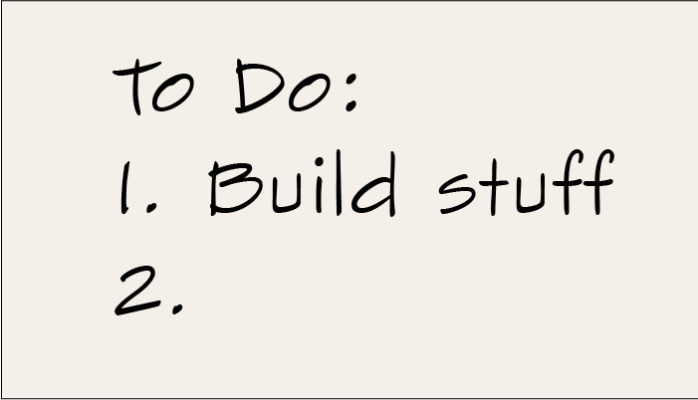

Becca 8 Release
After months of anticipation, it's finally here. Becca 8 is officially released. It's learning better and faster than ever and is easier to integrate in your research robots. Read more.

Pocket Guide to Data Science
Here's a math-free overview of data science in every day language. If you're looking to get started in the field, or just want to explain to your loved ones what it is you do, this may help. Read more.

To Become a Data Scientist, Build Stuff
Trying to make the career switch to data science? I get asked about this a lot. Here's my best shot at advice. Read more.
Data Science Can Only Answer Five Questions
For all its usefulness, it's easy to forget that data science can only answer five types of question. Here's the short list with examples of each. Read more.
To Do Good Data Science, Gather Good Data
Data science is wringing answers to our questions out of big collections of names and numbers. To get high quality answers, you need high quality data. Read more.

To Build a Data Science Team, Hire Specialists
Building a team of data scientists can be overwhelming, but there's some good news: You can stop chasing after unicorns. Read more.